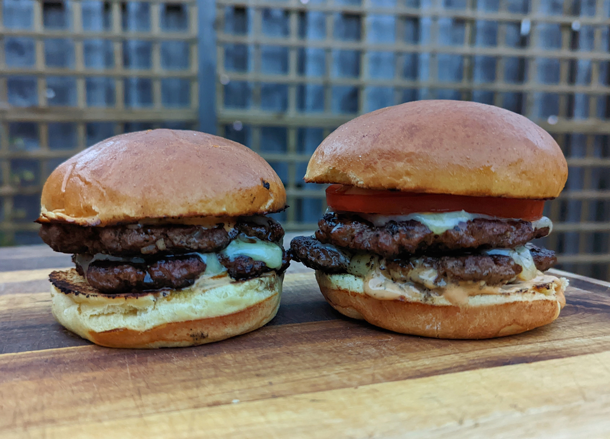

Homemade Smash Burger

Juicy double burgers, with crispy bun, topped with gooey cheese
Description
This smash burger recipe makes super juicy burgers with crispy edges. Don't use meat that is leaner than 80/20 for best results,
and make sure the meat is very cold. I prefer to cook these outdoors to avoid smoking up the kitchen. These grill up very fast because of the
high heat, so make sure you have everything ready to go!
Ingredients
For 4 burgers
- 4 hamburger buns
- 2 tablespoons butter, softened, or as needed
- 1 pound ground chuck beef (80% lean)
- 4, 6-inch squares parchment paper
- salt to taste
- 4 slices American cheese
- burger toppings of choice
Directions
- Prehead an outdoor grill for high head and lightly oil the grate. Set a cast iron flat-top griddle or large cast iron skillet onto
the grill and preheat until smoking.
- Spread butter on the inside of the bums and toast on the flat-top until lightly browned. Set asdide.
- Form meat into 8 loosely-packed balls, 2 ounces each. Do not pack the meat tightly, as this will prevent it from smashing properly.
Place each ball on the hot flat-top, cover with a piece of parchment (to prevent sticking to the spatula; re-use each parchment square
on a second patty) and immediately smash down to a 1/4 inch thickness using 2 still, sturdy spatulas that are criss-crossed to get
proper leverage as you press down. You may also use the bottom of a small skillet. Sprinkle the meat with salt.
- Grill for about 45 seconds, until the edges are dark brown and the centers are a light pink color. Using a bench scraper of firm spatula,
gently scrape up the patties, flip over and immediately cover 4 of then with cheese. Grill an additional 15 to 20 seconds; stack the plain
patties over the cheese-covered patties so you have 4 stacks. Move each stack to a bun and serve with your favourite toppings.